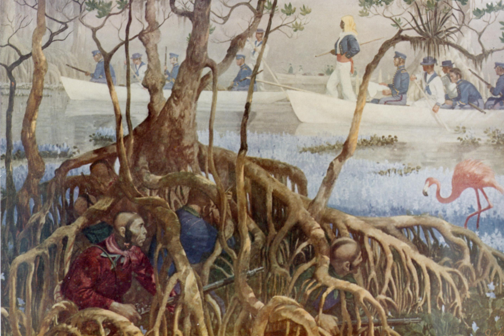
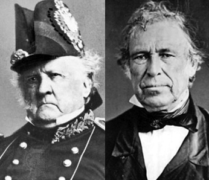
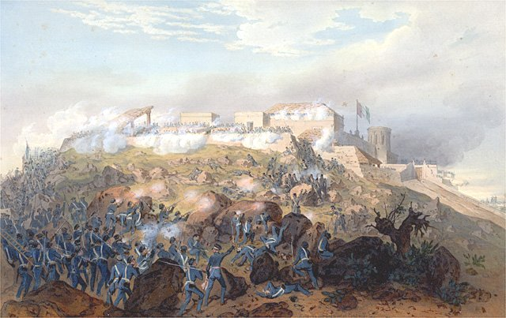
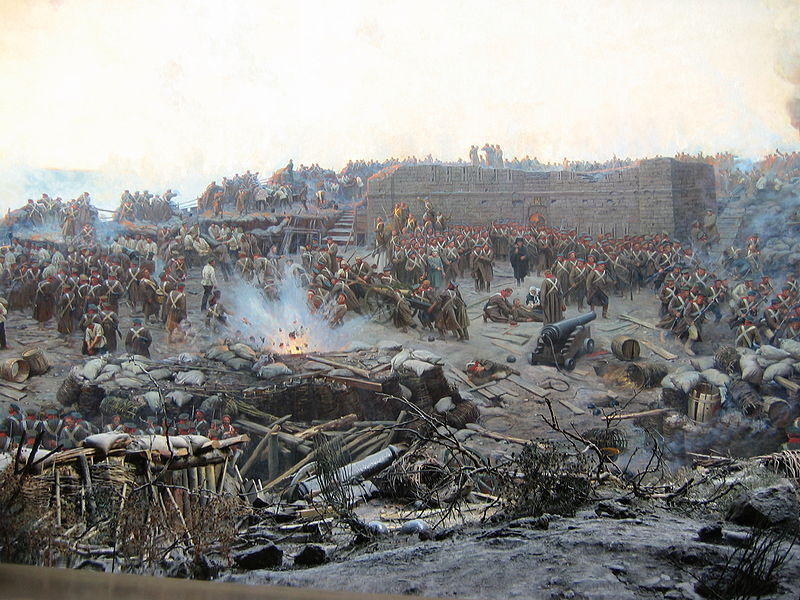
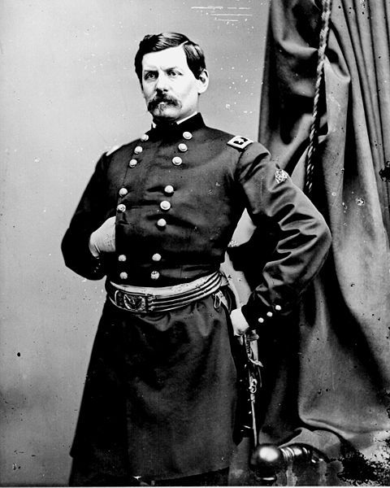

|
The antebellum era was a time of great change for armies
across the world, especially the army of the United States.
The U.S. army's growth was heavily influenced by three wars
fought in the three decades before the Civil War. The Second
Seminole War (1835-1842) and the Mexican-American War
(1846-1848) provided combat experience for many of the men
who would serve as officers in the Civil War. The Crimean
War (1853-1855) did not involve American troops, but had
global influence that extended to the Americas.
The Second Seminole War, 1835-1842
The United States fought a total of three wars against
the Seminole Indians (the first, from 1817 to 1818; the
second, from 1835 to 1842; and the third, from 1857 to
1858), with the primary aim of forcing the Seminoles to move
to new homes away from white settlement. Only the second
war-a dreary, long, ongoing series of nondescript clashes-is
|

U.S. Marines search for Seminole warriors
during the Second Seminole War. As the individual portrayed in the foreground
suggests, many "Seminoles" were actually runaway slaves.
|
of serious military importance. Climate, geography, and a
difficult supply situation made things hard for the American
soldiers. Men sometimes remained wet for months at a time,
sleeping in their clothes and boots. While none of the
American generals were graduates of West Point, the vast
majority of the company-grade and field-grade Regular Army
officers had attended the academy.
When the Seminoles could be brought to pitched battle,
the Americans tended to prevail. Interestingly, almost all
the Seminoles were armed with rifles, modern small-bore
Spanish weapons manufactured in Cuba. While rapidity of fire
for the Seminoles was impossible, their weapons offered much
greater accuracy. However, the Seminoles tended, in their
haste when reloading after a first volley, to use
insufficient powder. So, following what might be a
prodigious opening salvo, their fire was impotent. Once, a
soldier was hit in the forehead but only knocked out. On
another occasion, when Gen. Edmund P. Gaines was hit in the
mouth, he just spat out a couple of teeth and was otherwise
unhurt. One participant claimed that Seminole fire was not
dangerous beyond twenty yards, and he had seen it miss at
four.
The Seminoles never fared well under prolonged siege
operations, and they tended to ignore night security; but
they were quite elusive and relied heavily on terror
tactics, which proved effective. To have subdued them in one
campaign would have required tactics totally different from
any then-standard American technique: small parties of
rangers, living off the land, operating separately yet in
touch with each other.
Innovation was required. It came, but only to a scanty
extent. One regiment experimented with using rifles; another
dabbled with deception and surprise. Bloodhounds were
briefly used to help track the Seminoles, but the experiment
proved too controversial to continue. The most noteworthy
achievement was that of Bvt. Maj. Gen. Thomas S. Jesup, who
oversaw the development of a new and lighter field ration: a
day's allowance of food that weighed no more than
three-quarters of a pound. It was Jesup, too, who brought
about the war's end, for all practical purposes. But he
resorted to the unethical technique of treachery by
violating truces and taking Seminoles captive who had come
in to talk. The lid was at last placed on the war by Col.
William Jenkins Worth's relentless employment of troops as
partisan combatants, campaigning even through the sickly
season. Worth proclaimed the war to be over on August 14,
1842, after the capture and incarceration of the Seminole
chief, Osceola.
Most of the Seminoles were forcibly removed to Arkansas
and subsequently to Oklahoma (3,824 total by the end of
1843), but a remnant eluded capture and remained in Florida,
withdrawing into the Everglades after the war. The number of
that remnant was reduced to fewer than one hundred as a
result of the Third Seminole War in the 18505. They
refrained from contact with whites until the 1885 when their
isolation at last began to erode.
The impact of the Second Seminole War on the Regular Army
was significant. Seventy-four commissioned officers were
killed. Those who survived gained important experience,
which they would apply in future conflicts. Most notable of
these included the two top American commanders in the
Mexican War, Winfield Scott and Zachary Taylor. Virtually
all of the veteran officers who were still alive served in
the Mexican War when it commenced four years later. And when
the Civil War started, numerous Second Seminole War veterans
would attain appointments to high command: William S.
Harney, Samuel P. Heintzelman, Joseph Hooker, George Gordon
Meade, Edward O. C. Ord, William T. Sherman, and George H.
Thomas for the Union; Braxton Bragg, Joseph E. Johnston, and
John C. Pemberton for the Confederacy (as well as Gabriel J.
Rains, who invented the antipersonnel mine).
The Second Seminole War illustrated several lessons.
These included the importance of mobility and
supply-sometimes troops needed to be able to carry
everything they needed on their backs. And the conflict
showed much about guerrilla warfare. The army was forced to
allow a handful of unconquered Seminoles to remain in
Florida-a clear example of the potency of this kind of
combat, if an enemy is sufficiently determined and
dedicated.
The casualties were high. But less than one-quarter of
the Regular Army's losses were due to wounds sustained in
battle; disease was the greatest killer. Disease, too, was
by far the principal cause for losses among the
approximately 30,000 citizen soldiers who mustered at one
time or another for short periods of duty. Only 55
militiamen were killed in action (contrasting with the 328
Regular Army deaths from combat wounds), though this
illustrates neither their better luck nor their superior
ability but rather their tendency to quail in the face of
danger, to break and run. Regular Army officers were quite
correct in their critical assessments that militia units
were undisciplined and unreliable.
During these years, pursuing a career as an officer in
the U.S. Army brought much disappointment and frustration.
The army was small, occasionally varying from a total
strength of fewer than seven thousand to as many as twelve
thousand, with more than one hundred different posts being
manned; therefore it was necessarily an institution of
small, widely dispersed units. Because in essence there was
no retirement system, officers tended to stay on active duty
until they died, and promotions for younger officers might
be excruciatingly slow in coming. In 1835 the adjutant
general estimated that the average twenty one-year-old West
Point graduate after eight years as a brevet second
lieutenant and second lieutenant, ten years as a first
lieutenant, twenty years as a captain, ten years as a major,
and ten years as a lieutenant colonel, if he managed to
live, would finally reach the grade of colonel and the
command of a regiment at the age of seventy-nine.
In an attempt to remedy the problem of inadequate career
incentives, as well as to make the nation's military forces
more efficiently and effectively able to transform a small
peacetime establishment into a much larger wartime one, John
C. Calhoun when he was secretary of war (from 1817 to 1825)
propounded a concept called "the expandible Army." According
to this idea, large numbers of units would be organized,
though maintained at low levels of strength. The
commissioned and noncommissioned slots would be filled,
while many of the lower enlisted positions remained vacant
until some emergency called for numbers of additional
recruits to fill up the ranks. The plan offered obvious
advantages, but because it would make peacetime military
expenditures rise significantly it was never possible to
pass it in Congress.
As late as 1846 the majority of the Regular Army forces
continued to be armed with smoothbored, muzzle-loading
flintlock muskets, though over time design was improved. The
arsenal at Harpers Ferry turned out new models in 1816 and
1820, and in 1840 the U.S. Army Ordnance Department
commenced production of still another type of flintlock
musket. In 1842 the army adopted a new standard shoulder
weapon: the U.S. Model 1842 Springfield Percussion Musket.
Although still a muzzle-loading smoothbore musket that fired
a spherical projectile, it offered tremendous improvement in
reliability. Only a limited number of them, however, were
produced and put into service during the Mexican War.
In 1841, just prior to the appearance of the minie
bullet, a company owned by Eli Whitney Jr., son of the
famous inventor, began production of a percussion rifle.
Whitney coped with the loading problem by using spherical
bullets smaller than the bore, with the shooter wrapping
each round with a poplin patch.
At the outset of the Mexican War, a number of the West
Pointers who had previously resigned their commissions
returned to the army. One of them, Jefferson Davis, who left
a seat in the U.S. House of Representatives to serve as
colonel of a regiment of Mississippi Mounted Volunteers,
managed to arrange for his unit to have the new "Whitney
Percussion Guns".
The Mexican-American War, 1846-1848
The Mexican War presented challenges of unprecedented
proportions to American military men. It was a bigger and
more complicated affair than any they had previously
experienced. The general officers, as before, were men of
long service but had no formal professional training. The
total number of volunteers mustered for duty slightly
|

Mexican-American War commanders Winfield
Scott (left) and Zachary Taylor could not have been more different.
|
surpassed 75,500; they were invariably in all-volunteer
units that selected their own officers, usually by election.
After twelve months in service each volunteer could choose
to be discharged; most did.
The major campaigns of the war would be, as it turned
out, commanded by two very interesting and contrasting
individuals: Zachary Taylor and Winfield Scott. Scott
believed, much more than Taylor, in the value of formal
military schooling and relied heavily on the services
provided by the talented West Pointers (many of them by now
in field-grade ranks) with whom he liked to surround himself
Taylor, "Old Rough and Ready," was a more simplistic man and
had a disdain for West Pointers and little interest in
training or staff work. In many respects Scott transcended
into a military professional (at least a budding one), while
Taylor did not.
Many thousands of short-term volunteers joined Taylor's
army for his ultimately successful Monterrey campaign. Huge
numbers of the men fell sick, and nearly all of them
displayed a lack of discipline and inadequacy of training.
Logistic deficiencies continually vexed the American staff
officers. Another difficulty was exacerbated by the
militantly Protestant religious attitudes espoused by the
mass of volunteers. Thinly veiled and thoroughly hostile
manifestations of anti-Catholicism-which was rampant in
America at that time-sorely upset the inhabitants of so
starkly a Roman Catholic country as Mexico and nearly turned
the conflict into a holy war. The most notable of the
measures taken to counteract this hostility included the
securing of Roman Catholic chaplains to accompany the
American columns.
President James K. Polk's administration had no clear
strategy beyond supporting Taylor and spurring rebellious
events in California. Polk gradually crystallized his
thinking. Wishing to acquire greater New Mexico as well as
Texas and California, he decided to send expeditions to
seize the principal settlements in the desired area and then
whatever Taylor held below the Rio Grande could be used as a
lever at the peace table to induce Mexico to capitulate. All
of this was accomplished, but without bringing the expected
results. Worse, as far as the Democratic Polk administration
was concerned, Taylor-a Whig-was becoming not only a war
hero but also a future candidate for president. Hence, the
decision was made to reduce Taylor's army in favor of a
large expedition to take the capital city and force Mexico
into submission. Unhappily for Polk, there was no suitable
Democratic general available to command the expedition, so
the job fell to the general in chief, Winfield Scott. He too
was a Whig, but he was not believed to have presidential
ambitions nor serious chances even if he did.
General Scott did not attach any further significance to
Taylor retaining the territory he had occupied, but Taylor
had other cravings, and his acting upon them resulted in the
Battle of Buena Vista on February 23, 1847. Mexican General
Antonio Lopez de Santa Anna's men unleashed an all-out
attack on the American left. The defenders reeled backward.
The left wing was smashed. Many Indiana volunteers began to
flee in terror toward Buena Vista. At 9:00 A.M. Taylor's
whole army was threatened with disaster. At this critical
moment Taylor himself rushed to the scene, accompanied by
his reserves, and he ordered the Mississippi Mounted
Volunteers to advance. Col. Jefferson Davis conducted them
forward in column, and then they redeployed into line,
holding their fire until the foe came well within range of
their Whitney Rifles. Davis's men then opened a terrifically
accurate and devastating fire. It was a supreme moment of
glory for Davis (who received a painful wound in his right
foot but refused to retire from the field).
Shortly after noon Santa Anna attempted another grand
assault on the American left. This time he hoped to get
around to the rear and seize the Saltillo Road and perhaps
then be able to snatch the wagon train parked at Buena
Vista. This led to some of the bloodiest fighting of the
day. Again Jefferson Davis played a key role: gathering all
the Indianans who remained, and a couple of artillery
pieces, he formed them with his regiment into a V-shaped
line. The Mexicans were allowed to advance into this
open-faced triangular-shaped position- some as close as
sixty yards. At this range the Whitney Percussion Rifles
proved to be deadly accurate. The fire withered the Mexican
charge.
One more memorable episode at Buena Vista, an American
attack followed by a Mexican countercharge, produced a
moment that became legendary. About 4:00 P.M., Taylor
attempted to seize the initiative and ordered a forward
thrust. Three American regiments were quickly cut up. Santa
Anna then tried a last and desperate assault, this time
against the American center. Massed American artillery tore
gaping holes in the Mexican lines. At a critical moment
Capt. Braxton Bragg arrived at a threatened sector with his
battery. Bragg's guns were loaded with canister, and Taylor
shouted to him: "Double-shot your guns and give 'em hell,
Bragg!" (Melodrama altered the truth; it came later to be
recounted as "A little more grape, Captain Bragg.") Bragg's
first salvo ripped into and slowed the Mexican line. The
second and third drove it back, ending the fighting. In late
October, Taylor departed to await political developments and
his nomination to run for the presidency.
As for Davis, he returned home from the Mexican War a
wounded hero. His combat record, West Point education, and
seven-year career in the Regular Army all combined with his
political prominence to propel him into the position of
secretary of war during Franklin Pierce's 1853-1857
administration. Davis subsequently assumed the chairmanship
of the Senate Committee on Military Affairs and membership
on the Board of Visitors at West Point. In truth Davis did
know a great deal about things military, but later his Civil
Wartime critics-led by the bitter and acerbic Richmond
newspaper editor and historian Edward A. Pollard-asserted
that he had learned enough about war in a few minutes at
Buena Vista to defeat the Confederacy and that perhaps the
epitaph of the would-be Southern nation should be "died of a
V."
The final great extended phase of the war was Scott's
campaign to Mexico City. Scott derived much benefit from his
brilliant array of young professionally trained
subordinates-especially Capt. Robert E. Lee and Lt. Pierre
G. T. Beauregard. Thus, at the first notable battle, Cerro
Gordo on April 18,1847, Lieutenant Beauregard provided
useful reconnaissance; and in the battle, to the tremendous
surprise of the Mexicans, Scott's men attacked from both
front and rear. Thousands of Mexicans fled in confusion,
with 199 officers and 1837 enlisted men falling prisoner,
and huge amounts of material, including Santa Anna's
personal effects-even his wooden leg-were taken. The
Illinois troops who found the artificial leg took it home
with them and for years thereafter it was on display at
their state capitol.
The American army moved to Jalapa, and there Scott
wrestled with a grave problem: the term of enlistment for
his twelve-month volunteers was due to expire in six weeks.
In vain, Scott passionately attempted to persuade them to
remain in service. Fewer than 1o percent agreed to continue;
Scott dispatched the rest home. By the end of May, Scott
relocated his headquarters to Puebla, and there he spent ten
dismal weeks during which morale plummeted. But through it
all the army persevered, Scott and the Regulars rigorously
trained the remaining volunteers, and at last reinforcements
arrived. On August 7 Scott's army set out on the final part
of its march; their destination was Mexico City,
seventy-five miles west.
Time after time Santa Anna mistakenly assumed that the
Americans would assault his force frontally; but Scott
consistently managed to do the unexpected. First, Santa Anna
felt sure that the Americans would assault at El Penon, a
hill commanding the National Road. The American engineers,
however, discovered a muddy route south of Lakes Chalco and
Xichimilco along the base of the mountains that would lead
them to San Augustin. On August 17, making a flanking
movement, one of the most important maneuvers of the entire
war, William J. Worth's division swung around and took San
Augustin easily.
Again the American engineers made reconnaissances, this
time west toward Contreras, across a lava bed called the
Pedregal. They returned, assuring the troops that it was
possible to cut a road through the rocky field. Five hundred
men, superintended by Capt. R. E. Lee, worked to create a
road, even while harassed by enemy fire. When the commander
at Contreras was informed what was happening, he replied,
"No! No! You're dreaming, man. The birds couldn't cross that
Pedregal." The Americans attacked first from the front and
then from behind. Within five minutes the Mexicans broke and
ran in utmost confusion. In this Battle of Contreras, one of
|

The assault on Chapultepec during the campaign
for Mexico City
|
the most decisive of the campaign, the Americans lost only
60 men killed or wounded, while they inflicted a toll of
about 700 enemy killed, took 843 men prisoner, and captured
twenty-two pieces of artillery. And so, onward to the end of
the campaign, the Americans always prevailed.
The Castle of Chapultepec became the next major
objective. Guns at that castle, where a Mexican military
school was located, swept both routes that led into Mexico
City. From the early morning on September 12, a daylong
bombardment pounded the castle. At 5:30 A.M. on September 13
the bombardment recommenced, and at 8:00 A.M. the Americans
assaulted. During the bitter struggle, the Americans made a
number of appalling blunders, such as failing to have
scaling ladders in the proper place at the proper time, but
the battle concluded ninety minutes later, with the
Americans victorious. When Santa Anna saw the American flag
that soon fluttered over the castle, he exclaimed, "]
believe if we were to plant our batteries in Hell the damned
Yankees would take them from us." Another officer shook his
head and sighed, "God is a Yankee."
The city surrendered on September 14. Although guerrilla
and irregular warfare long persisted, in essence the war was
over. The Treaty of Guadalupe Hidalgo was signed on February
3, 1848, and ratified by the U.S. Senate or March 10,1848,
wherein the United States gained ownership of the vast
Mexican Cession territory and in turn compensated Mexico
somewhat for her financial losses.
Scott's campaign to Mexico City stands as a brilliant
accomplishment. In 1860 Scott asserted in congressional
testimony that the services of the young officers who had
learned the techniques of war at the U.S. Military Academy
had been crucial: "I give it as my fixed opinion, that but
for our graduated cadets, the war between the United States
and Mexico might have lasted some four or five years, with,
in its first half, more defeats than victories falling to
our share." It was a fine testimonial to emergent
professionalism. In the broader world, too, events soon
heralded the necessity for a higher level of military
professionalism.
The Crimean War, 1853-1855
The war in the Crimea was the first big war waged by
mostly rifle-armed combatants on both sides. It was also the
first major conflict covered by newspaper correspondents,
including William Howard Russell, whose dispatches to the
Times (London) are classic. They went instantaneously, via
the Mediterranean underwater cable, to London. Too, it was
the first much photographed war. And this war was the first
one in which women established their position as army
nurses. The English nurse, hospital reformer, and
philanthropist Florence Nightingale took thirty-eight nurses
to Scutari in 1854 and organized a barrack hospital, where
they introduced sanitation and lessened the severity of
countless cases of typhus, cholera, and dysentery.
The war, which initially pitched Russia against Turkey,
was officially declared by the sultan on October 4, 1853,
but on March 28, 1854, France and Britain also declared war
on Russia. Setting sail on September 7,1854, the allied
armies invaded Russia, landing unopposed on September 14 at
Eupatoria, on the Crimean peninsula, the scene of all the
important fighting.
The allies achieved victory in the first big clash, which
culminated in the Battle of the Alma on September 20, 1854,
but not without the troops suffering considerable hardship.
From the outset things went awry when no tents were
disembarked for the British landing forces, who were not at
all ready for the harsh realities they now faced.
Furthermore, the British officers were not well prepared,
and there was no service corps or any full-time staff.
Fitzroy James Henry Somerset, First Baron Raglan, was in
command. Sixty-seven years old, he had never commanded even
a company of troops. He was thoroughly inadequate for his
job, as were most of his principal subordinates, who, like
him, were superannuated.
The celebrated Minie Rifle had for several years been
manufactured by license in England, but it had only recently
been issued to the combat troops. Only a scant few of the
men had them by the start of the war; and for almost four
months after the landing a good many of the British soldiers
had nothing better than a Brown Bess-a truly antiquated
weapon that one soldier said was "about as useless as a
broom stick."
The allies-twenty-seven thousand British, twenty-five
thousand French, and some eight thousand Turks-did rather
little at first, except to drink and wish that unveiled
women might be found nearer than Bucharest, though one
anxious pasha complained that "the veils of our women fall
lower every day." The British looked at their friends in
amazement and perhaps envy, for initially the Frenchmen and
the Turks were in better shape equipment-wise. Each
Frenchman landed with a third section of the famous tenses a
abri (Civil War-era Americans-who eventually used similar
versions of these tents- called this type of shelter "dog
tents," and smaller versions [made up of halves rather than
thirds] were used by succeeding generations who called them
"pup tents"). The Turks had large bell-shaped tents, and all
possessed plenty of equipage.
The allied commanders learned that the Russians were
established on the heights above the Alma River, and rather
slapdash plans were soon made to assault. Fortunately for
the allies, the Russian leaders proved even more inept. The
|

The Siege of Sevastopol, as dramatized in
a 1904 painting
|
Russians were best prepared to face an enemy that fought in
column as the Russians themselves did-not a rifle-armed foe
that deployed in line formation. Nearly all the Russian
regular infantry were armed with smoothbore muzzle-loading
muskets that had only recently been converted from
flintlocks to percussion firing mechanisms. (Much effort was
soon made to procure and issue rifles, and many-but not
all-of the Russian smoothbores were replaced.)
In the battle, the French rifle fire proved murderous.
The Russian troops were then withdrawn to the formidable
defensive emplacements around Sevastopol, and the allies
laid siege. The first bombardments occurred October 17-19,
1854. The Russian entrenchments and fortifications were
under the general direction of Col. E. I. Totleben, one of
the most insightful and able military engineers of the day,
then in his fullest vigor of body and mind. In an attempt to
break the initial investment, the Russians fought two
spectacular offensive battles: Balaklava (on October
25,1854) and Inkerman (on November 5, 1854).
The Battle of Balaklava is interesting primarily because
of the epic quality imparted to it, by its actual reality,
and by the unreality injected into its mythic image by
Alfred, Lord Tennyson's famous poem "The Charge of the Light
Brigade." The battle was fought, not as Tennyson described
it, in a "valley of death," but rather on a plain above the
city of Balaklava. The battle is also interesting because of
the long-range accuracy achieved by some shooters on both
sides.
The famous charge occurred because of a confusion in
orders and because of misunderstood command-intent. The
Russians had captured a British fort and were engaged in
hauling away the fort's guns. Raglan wanted to prevent the
guns from being taken. But he had not meant for the Light
Brigade of Cavalry- between six and seven hundred
horsemen-to assault, as they did, headlong into an obviously
formidable twelve-piece enemy artillery emplacement.
Fire came from both sides of the plain, from massed
Russian infantry recently armed with Minie Rifles, and
frontally from the twelve guns as the attackers approached.
But the important thing to note, and perhaps too-often
unnoticed, is that the guns were taken. Unsupported, or not
closely defended, artillery is ultimately vulnerable to
attack.
After the Battle of Balaklava, the primary task of
besieging Sevastopol was entrusted to a siege corps
comprised of 18,500 French and 16,500 British soldiers.
Other allied troops, some 23,000 men, formed a corps of
observation facing east to guard the long allied right
flank. The investment was not absolute, however, so the
Russians could still move troops in and out by boat.
Menshikov, a Russian general, had a total of 107,000 men,
many of them freshly arrived, allowing him to enjoy a 30
percent numerical superiority, and he was stronger than the
allies in artillery.
The Russians tried to dislodge the besiegers with a
series of attacks, collectively known as "Little Inkerman"
and "Inkerman," on November 5, 1854. When the big battle
erupted, it came suddenly-quite unlike most great battles in
modern fluid campaigns-with no warning at all and with
little or no advance preparation. Not a single British staff
officer recognized anything unusual, despite the obvious
much increased activity within the Russian camps.
In the first phase of the battle, between 5:45 and 7:50
A.M., the Russians pressed hard, enjoying an initial
advantage in firepower, not only because they were more
numerous but also because they had been issued plugs to keep
the night rain out of their gun barrels. The British had no
plugs, and many of their pieces could not be fired until
after a time-consuming drying. Then the fog lifted, making
it easier for the Russians to advance on the very unfamiliar
ground. The British riflemen, their pieces activated at
last, well exploited the terrain-not only the elevation but
also the brushwood that many of them found cover behind.
Overall, some fifteen thousand assaulting Russians were
repulsed by less than one-fourth of their number. How could
this happen? It was caused first by the Russians attacking
in the open and moving uphill, against a rifle-armed enemy
that enjoyed relative cover and concealment, and second by
the density of the formations the Russians inflexibly
employed. The mass of these Russians still lacked rifles,
while the British riflemen not only poured forth a murderous
fire from much longer range but also, owing to the density
of the attack formations, many British bullets passed
through more than one Russian's body.
All of the ensuing periods of the battle were sanguinary,
some rather more so than others, and occasionally there was
intense hand-to-hand fighting and horrifying massacre. But,
always, the end results affirmed and reaffirmed the utter
stalemate. The deadlock continued for many more months.
The winter of 1854-1855 was especially hard on all the
combatants. The season commenced rather precipitously with a
violent hurricane on November 14. At the close of the storm,
the evening brought snow. During the ensuing weeks and
months, the grossly ill-equipped British, ill-served by
incompetent logisticians, chronically suffered from scanty
diet and even shortages of fuel for cooking- despite the
well-stocked stores at Balaklava, which could not now be
accessed because of inadequate transportation. Scurvy and
other diseases became rife. The British troops ultimately
owed their very survival to the work of the newspaper
correspondent William H. Russell. Keenly observant,
gracefully articulate, sometimes blunt, his candid
dispatches aroused public awareness and probably saved the
British army from annihilation, which had nearly been caused
by sheer neglect.
The allies were ultimately able to enhance their supplies
of ordnance and commissariat stores via the Grand Crimean
Railway, a branch of which the British constructed to
connect their siege emplacement with the rear of the British
camp at Kadikoy. The rails-the first in history that were
laid for a purely military purpose-eliminated several miles
of animal transport. "If war is a great destroyer, it is
also a great creator," Russell wrote. Too, an electric
telegraph linkage was eventually established between the
British headquarters and Kadikoy.
In March 1855, the allies intensified the bombardment,
employing newly arrived rocketry. From April through June,
violent attacks were hurled in desperate and vain attempts
to break the Russian resistance. The allied commanders
remained resolute: "If it costs ten or ten millions," so
went a popular French expression, "we will take it." And on
June 18,1855, a joint allied assault was launched. On June
17 eight hundred allied guns had preceded the attack with a
daylong cannonade. It was, thought one observer, like none
|

In his time as the commander of the Army of the Potomac,
George McClellan struggled to make productive use of what he had learned
while observing the Crimean War.
|
the world had seen or heard before. Embrasures crumbled, and
guns and parapets disappeared. Surely, the allied commanders
thought, success would come on the morrow. Many of the
attackers were now armed with the notably superior, newly
issued Enfield Rifle in place of their Minies. But when the
ground troops advanced, the Russians were quite ready to
deal with and repulse the attack.
Springtime faded into summer, and summer wore on, and the
two sides remained locked in an ever more disheartening
stalemate. "Not a woman left, not a restaurant," the
later-famous author Tolstoy (who was there) wrote of the
spreading gloom and despair in Sevastopol. "No music; the
last brothel went yesterday. It's melancholy."
The siege finally ground to its bitter end. At long last,
after 322 days, came the conclusion of the Sevastopol siege.
On September 5 the allies commenced the final bombardment: a
three-day-long pounding by 800 guns firing 13,000 shells and
90,000 round shot. The French fired in synchronized volley,
250 guns at a time. The French, aided by a movable bridge on
rollers that was run across the ditch, succeeded in taking
the Malakov Tower, a key position. On September 11,855, the
Russians evacuated Sevastopol; they blocked the harbor by
sinking their ships not needed for troop transport and blew
up their forts as they left. A peace treaty was signed on
March 30, 1856.
The Crimean War provided several lessons. One obvious
truth: it was the height of folly to commit non-rifle-armed
troops against foes who did have rifles; all future wars
would be fought with troops on both sides armed with rifled
shoulder weaponry. The United States adopted a standard
rifle in 855, a Springfield .58-caliber minie. The United
States also adopted a new tactical system, embodied in
Hardee's Rifle and Light Infantry Tactics. Prescient
observers also could have seen that entrenchments and field
fortifications would be necessary and commonplace in the
future. But were there any prescient observers of this war?
More specifically, were there any prescient American
observers? A three-man American commission of officers--which
included George B. McClellan--went not only to look at the
ongoing siege of Sevastopol but also to visit and observe
the other European military establishments. However, these
men wasted most of their time in frivolities such as
studying how best to hang hammocks.
Another lesson of the Crimean War was that sieges of
well-constructed and strongly defended places-unless raised
by outside force (as had been the case since the days of
Sebastien Le Prestre de Vauban, from 1633 to 1707)-would
succeed eventually, but only at great costs in time,
resources, and lives. Moreover, disease and exposure had
produced four-fifths of the Crimean War casualties; this
would continue to be a principal problem in future modern
conflicts, the next of which was to be the Civil War.
Source: Herman Hattaway, Shades of Blue and Gray: An Introductory Military
History of the Civil War (Columbia: University of Missouri Press, 1997), 29-33.
|